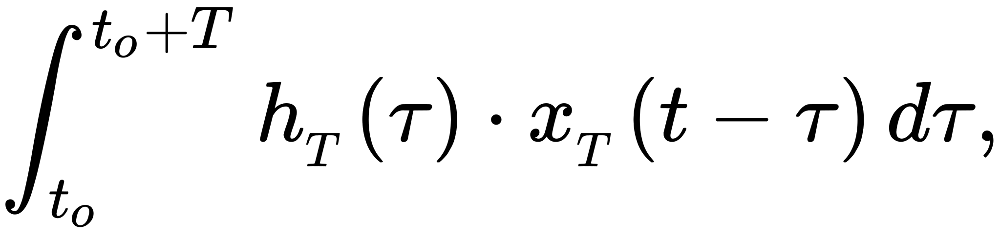
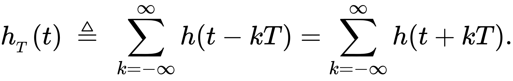
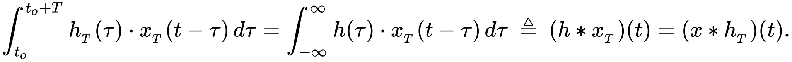
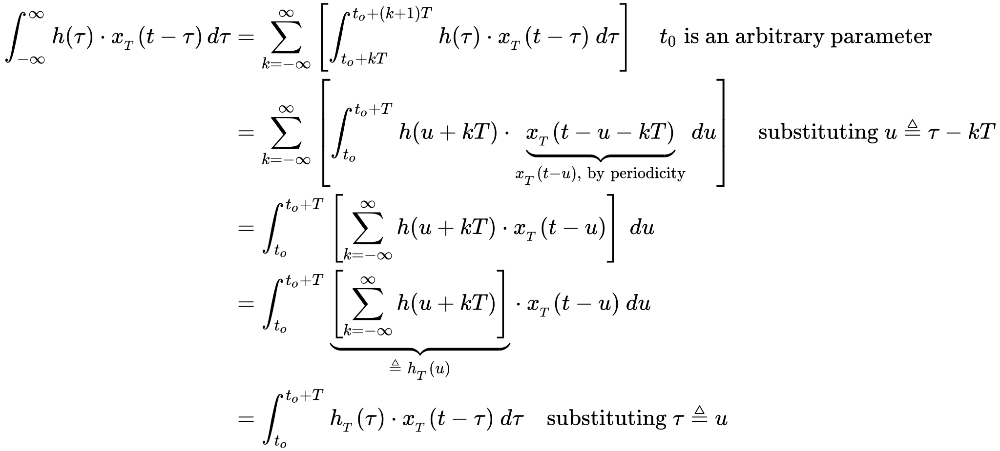
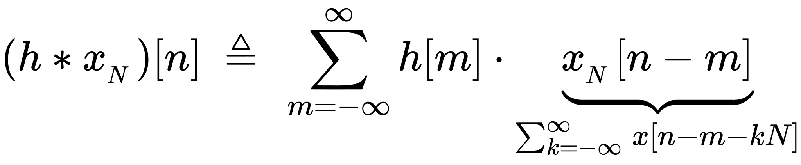

Circular Convolution
Circular convolution, also known as cyclic convolution, is a special case of periodic convolution, which is the convolution of two periodic functions that have the same period. Periodic convolution arises, for example, in the context of the discrete-time Fourier transform (DTFT). In particular, the DTFT of the product of two discrete sequences is the periodic convolution of the DTFTs of the individual sequences. And each DTFT is a periodic summation of a continuous Fourier transform function (see DTFT § Definition). Although DTFTs are usually continuous functions of frequency, the concepts of periodic and circular convolution are also directly applicable to discrete sequences of data. In that context, circular convolution plays an important role in maximizing the efficiency of a certain kind of common filtering operation.
Circular convolution:
The periodic convolution of two T-periodic functions, hT(t) and xT(t) can be defined as:
where to is an arbitrary parameter. An alternative definition, in terms of the notation of normal linear or aperiodic convolution, follows from expressing hT(t) and xT(t) as periodic summations of aperiodic components h and x, i.e.:
Then:
Derivation for above equation:
Both forms can be called periodic convolution. The term circular convolution arises from the important special case of constraining the non-zero portions of both h and x to the interval [0,T]
For Discrete sequences:
Similarly, for discrete sequences, and a parameter N, we can write a circular convolution of aperiodic functions h and x as:
This function is N-periodic. It has at most N unique values. For the special case that the non-zero extent of both x and h are ≤ N, it is reducible to matrix multiplication where the kernel of the integral transform is a circulant matrix.
The step-by-step values for the provided input is shown below :